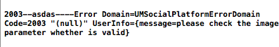
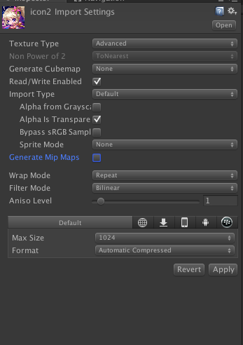
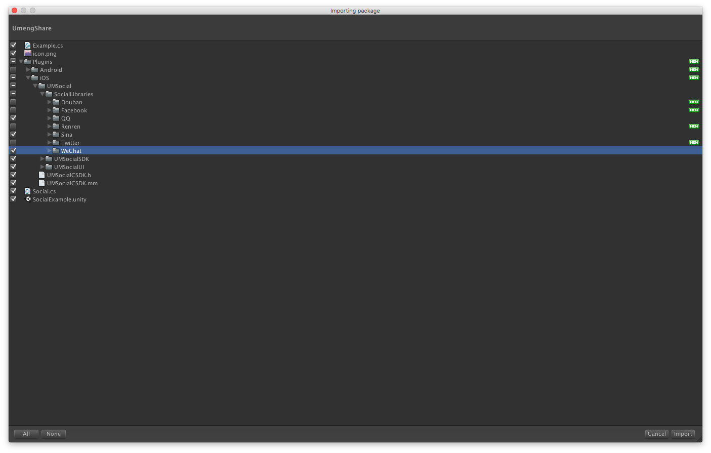
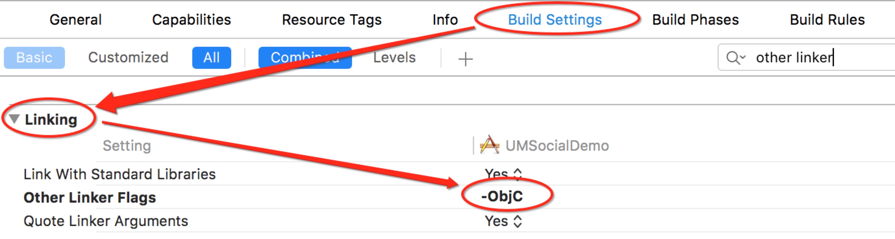
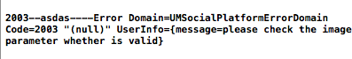
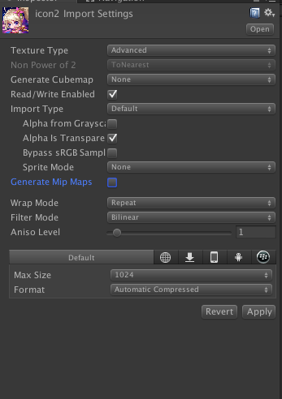

9.URL Scheme
URL Scheme是用来跳转APP的
info->URL Types->+

这里设置QQ的key时注意是“QQ”+腾讯QQ互联应用appID转换成十六进制（不足8位前面补0）
10.Build Setting -> Packaging -> Info.plist添加HTTP传输允许
11.额。。差不多了吧
如果分享的图片出现如下问题：

可以将检查下

是不是图片的属性没有设置正确。😝
许多游戏都有分享功能，这里我们来学习一下友盟分享的接入。
我接入的是友盟Unity3D v6.2.0版本。去这里下载。下载好后就开始接入吧。其实官网的接入流程还是挺详细的, 不过我还是要啰嗦一遍😁
1.首先导入unity包。

这里我只需要iOS版里的QQ、Sina和微信的第三方SDK。
2.开始调用
定义分享平台
Platform[] platforms = { Platform.QQ,Platform.QZONE,Platform.SINA,Platform.WEIXIN,Platform.WEIXIN_CIRCLE};
调用分享面板
Social.OpenShareWithImagePath (platforms,"Hello World", Application.persistentDataPath + "/Sceenshot.png","umeng","http://www.umeng.com/", sharecallback);注意⚠️：
1)这里Sceenshot.png需要预先存储在Application.persistentDataPath路径下。
- 例如采用unity自带截屏函数
Application.CaptureScreenshot("Sceenshot.png");也可以使用C#里System.IO命名空间下的文件操作函数进行写入
public Texture2D ShareImage; if (!File.Exists (Application.persistentDataPath + "/Sceenshot.png")) { File.WriteAllBytes (Application.persistentDataPath + "/Sceenshot.png", ShareImage.EncodeToPNG ()); Debug.Log ("File.WriteAllBytes path =" + Application.persistentDataPath + "/Sceenshot.png"); }2) 这里的sharecallback是分享的回调，里面包含有分享的平台与错误代码等信息。例如：
public void sharecallback (Platform platform, int stCode, string errorMsg) { Debug.Log (stCode.ToString () + "-----" + errorMsg); if (stCode == Social.SUCCESS) { ...... } }
调用结束后就可以打包到Xcode工程里了,什么，你说Key和secret还没设置，这个是放到Xcode里初始化的，当然原来是在unity里就可以初始化了。这次友盟SDK更新的有点坑。😂
3.unity5.0以下版本
小于unity5.0的版本记得把Plugins->iOS->UMSocial文件夹拖到Xcode工程里。
4.打包好Xcode工程后找到UnityAppController.mm文件做出如下修改:
头文件添加：
#import <UMSocialCore/UMSocialCore.h>
在- (BOOL)application:(UIApplication*)application didFinishLaunchingWithOptions:(NSDictionary*)launchOptions方法中添加sdk的初始化代码：（其中[UMSocialGlobal shareInstance].type = @"u3d";必须要添加，否则无法定位错误）[[UMSocialManager defaultManager] openLog:YES]; NSLog(@"UMeng social version: %@", [UMSocialGlobal umSocialSDKVersion]); [UMSocialGlobal shareInstance].type = @"u3d"; //设置友盟appkey [[UMSocialManager defaultManager] setUmSocialAppkey:@"57b432afe0f55a9832001a0a"]; //设置微信的appKey和appSecret [[UMSocialManager defaultManager] setPlaform:UMSocialPlatformTypeWechatSession appKey:@"wxdc1e388c3822c80b" appSecret:@"3baf1193c85774b3fd9d18447d76cab0" redirectURL:@"http://mobile.umeng.com/social"]; //设置分享到QQ互联的appID [[UMSocialManager defaultManager] setPlaform:UMSocialPlatformTypeQQ appKey:@"100424468"/设置QQ平台的appID/ appSecret:nil redirectURL:@"http://mobile.umeng.com/social"]; //设置新浪的appKey和appSecret [[UMSocialManager defaultManager] setPlaform:UMSocialPlatformType_Sina appKey:@"3921700954" appSecret:@"04b48b094faeb16683c32669824ebdad" redirectURL:@"http://sns.whalecloud.com/sina2/callback"];
这里的key要记得替换为自己申请的哦。
千万万万注意初始化友盟的Key😭不然你的分享面板会一片空白！！！
5.回调:
记得还要在
- (BOOL)application:(UIApplication*)application openURL:(NSURL*)url sourceApplication:(NSString*)sourceApplication annotation:(id)annotation方法中添加如下代码：
BOOL result = [[UMSocialManager defaultManager] handleOpenURL:url];
不然回调永远也不会成功。(在这里踩过坑😂)6.还要添加第三方平台依赖库
在General->Linked Frameworks and Libraries下添加
系统库：libsqlite3.tbd CoreGraphics.framework微信：
SystemConfiguration.framework CoreTelephony.framework libsqlite3.tbd libc++.tbd libz.tbdQQ：
SystemConfiguration.framework libc++.tbd新浪微博：
SystemConfiguration.framework CoreTelephony.framework ImageIO.framework libsqlite3.tbd libz.tbd7.Build Settings->Linking->Other Linker Flags 设置-ObjC

8.配置SSO白名单
如果你的应用使用了如SSO授权登录或跳转到第三方分享功能，在iOS9/10下就需要增加一个可跳转的白名单，即
LSApplicationQueriesSchemes(详解见Xcode_config第二条.
)，否则将在SDK判断是否跳转时用到的canOpenURL时返回NO，进而只进行webview授权或授权/分享失败。 在项目中的info.plist中加入应用白名单，右键info.plist选择source code打开(plist具体设置在Build Setting -> Packaging -> Info.plist File可获取plist路径) 请根据选择的平台对以下配置进行裁剪:<key>LSApplicationQueriesSchemes</key> <array> <!-- 微信 URL Scheme 白名单--> <string>wechat</string> <string>weixin</string> <!-- 新浪微博 URL Scheme 白名单--> <string>sinaweibohd</string> <string>sinaweibo</string> <string>sinaweibosso</string> <string>weibosdk</string> <string>weibosdk2.5</string> <!-- QQ、Qzone URL Scheme 白名单--> <string>mqqapi</string> <string>mqq</string> <string>mqqOpensdkSSoLogin</string> <string>mqqconnect</string> <string>mqqopensdkdataline</string> <string>mqqopensdkgrouptribeshare</string> <string>mqqopensdkfriend</string> <string>mqqopensdkapi</string> <string>mqqopensdkapiV2</string> <string>mqqopensdkapiV3</string> <string>mqqopensdkapiV4</string> <string>mqzoneopensdk</string> <string>wtloginmqq</string> <string>wtloginmqq2</string> <string>mqqwpa</string> <string>mqzone</string> <string>mqzonev2</string> <string>mqzoneshare</string> <string>wtloginqzone</string> <string>mqzonewx</string> <string>mqzoneopensdkapiV2</string> <string>mqzoneopensdkapi19</string> <string>mqzoneopensdkapi</string> <string>mqqbrowser</string> </array>
不添加的话分享面板是不会显示出来对应平台的哦。
9.URL Scheme
URL Scheme是用来跳转APP的
info->URL Types->+
这里设置QQ的key时注意是“QQ”+腾讯QQ互联应用appID转换成十六进制（不足8位前面补0）10.Build Setting -> Packaging -> Info.plist添加HTTP传输允许
NSAppTransportSecurity NSAllowsArbitraryLoads 11.额。。差不多了吧
如果分享的图片出现如下问题：

可以将检查下

是不是图片的属性没有设置正确。😝